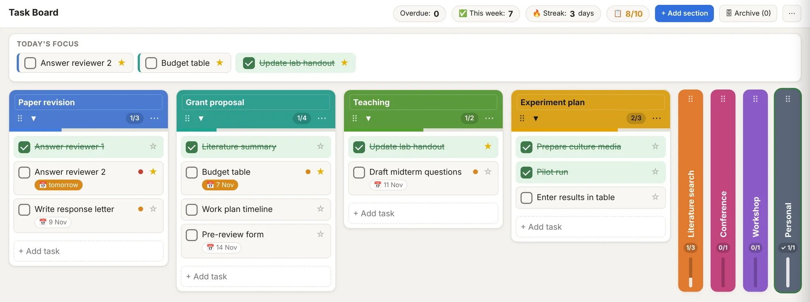

Task Board
Split your work into sections, keep an eye on due dates and pick your focus for the day. Archive finished sections to make room for new work.
Version 1.0. A single HTML file; no account, installation or internet needed.

What Task Board does
It is deliberately small. It is not a calendar or project management suite; it helps you see the work in front of you and finish it.
Colored sections
Open a section for each project and choose its title and color. Drag tasks to reorder them or move them to another section.
Today’s focus
Pin up to three open tasks from any section to the top. The ones you finish stay there for the rest of the day.
Everything on one screen
Five sections stay fully open and the rest fold into vertical strips. At most ten sections can be open; archive a finished one to make room.
Seeing progress
A checked task is struck through and turns green. A finished section gets a small celebration, and a weekly count and day streak sit at the top.
How to use it
- Download the ZIPWith the button above.
- Extract it to a folderYour desktop or Documents works.
- Open task-board.htmlIn Chrome, Edge or Firefox.
- Save a backup now and thenUse “Download backup” in the ⋯ menu.
Questions
Where is my data stored?
Tasks stay in the local storage of the browser you open the board in and are never sent to a server. That means they do not appear on another computer or browser, and clearing browser data erases them. Download JSON backups regularly.
How do I move to another computer?
Download a backup from the ⋯ menu on the old computer, then use “Load from backup” in the same menu on the new one.
Does it work on a phone?
You can open the file in your phone’s browser; on a narrow screen the sections stack vertically. The board on your phone is separate from the one on your computer.
I found a bug or have a suggestion.
You can report it on GitHub Issues. Open GitHub Issues